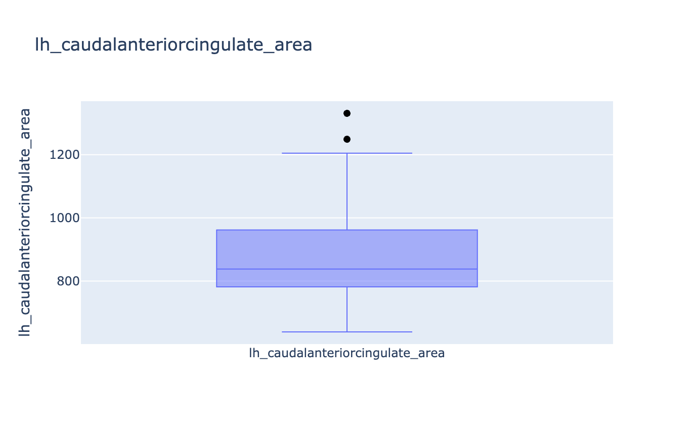
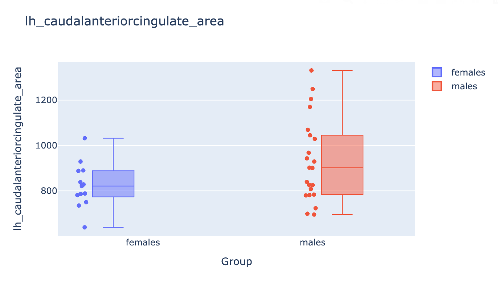

Group reports¶
A group report aggregates FreeSurfer stats tables for a cohort, plots metric distributions, and lists subjects that fall outside a standard-deviation threshold. Optionally it compares named groups.
This path uses FreeSurfer’s asegstats2table and aparcstats2table (so
FreeSurfer must be on PATH). It does not call FSL.
from pyfsviz import FreeSurfer
fs = FreeSurfer()
fs.gen_group_report("reports/")
The HTML file is reports/group_report.html. Stats CSVs are written alongside
it (and in group_<name>/ subfolders when groups live in different subject
trees).
Arguments¶
| Argument | Default | Effect |
|---|---|---|
output_dir |
required | Directory for HTML and CSV tables |
subjects |
all from get_subjects() |
Explicit subject list (ignored if groups is set) |
groups |
None |
Named groups for discovery and comparison |
template |
packaged group.html |
Path to a Jinja2 HTML template |
sd_threshold |
3.0 |
Flag values beyond mean ± this many SDs |
If both subjects and groups are passed, subjects from groups are used
and a warning is logged.
Group definitions¶
Each group can be a directory to scan or an explicit ID list.
Scan subdirectories of SUBJECTS_DIR (subjects_dir/control,
subjects_dir/patient):
fs.gen_group_report("reports/", groups=["control", "patient"])
# equivalent:
fs.gen_group_report("reports/", groups={"control": None, "patient": None})
Scan an explicit directory:
fs.gen_group_report(
"reports/",
groups={"control": "/data/cohorts/controls"},
)
Relative paths are resolved under SUBJECTS_DIR. Directory scans use the same
rule as get_subjects(): only folders with mri/transforms/talairach.lta.
Give membership explicitly (subjects must still exist where FreeSurfer stats commands can find them):
fs.gen_group_report(
"reports/",
groups={
"control": ["sub-001", "sub-002"],
"patient": ["sub-101", "sub-102"],
},
)
When group directories differ from SUBJECTS_DIR, pyFSViz temporarily sets
SUBJECTS_DIR per group so the table commands read the right tree. (pyFSViz wraps the FreeSurfer stats2table commands in nipype-style wrappers to generate the tables, so SUBJECTS_DIR must be set).
What the report contains¶
- Cohort size, threshold, and (if grouped) per-group counts
- Outlier subjects, with metric/region and value
- Quality summary by region (passed / outliers / no data), with one tab per stats table
- Between-group box plots when
groupsis set, with one tab per stats table that was generated (aseg, LH/RH area, volume, thickness, or any extra measure) - Plotly outlier/distribution plots, also one tab per stats table
Group comparison is visual only: each plot shows the value distribution by group, with one point per subject.
Example plots below are from
OpenNeuro ds004731.
See generate_reports.py for the
script that produced the HTML (group membership from participants.tsv
sex).
Outlier / distribution plots¶

Between-group comparison¶
When groups= is set, each metric gets a box + strip plot by group:

Stats tables¶
gen_group_report calls get_stats() to build:
aseg.csv— subcortical volumes (asegstats2table). If a subject hasstats/synthseg.vol.csvor similar, SynthSeg total intracranial volume is merged in. (See Prerequisites for more information on this measure).- Per-hemisphere aparc tables for area, volume, and thickness
(
lh_area_aparc.csv,rh_thickness_aparc.csv, …)
Use these CSVs directly, or see Stats and outliers to run the same helpers without generating HTML.